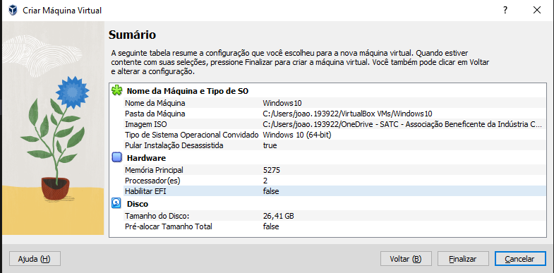

Manual de Instalação do
Primeiro passo:
Abra o Oracle VM VirtualBox
Segundo Passo:
Clique em "Novo"
Terceiro Passo:
Após Clicar, ira abrir o menu para criar e nomear a maquina virtual, Você deve:
• Escolher um nome
• Selecionar a pasta onde ficara instalado
• Selecionar o arquivo .ISO
• Selecionar "Próximo"
Quarto Passo:
Após isso, ira aparecer a aba de alocação de Memoria Ram e Nucleos do processador
(OBS: Essa parte é recomendado não ultrapassar a linha verde.)
Quinto Passo:
E então, Você precisara escolher quanto de memoria do seu computador
sera disponibilizada para a memoria virtual.
Sexto Passo:
Agora cheque se as opçoes estão de acordo com suas preferencias.
Setimo Passo:
Agora volte para o Oracle VM VirtualBox.
Inicie o seu Sistema Operacional Virtual
E então aparacera isso:
E então, introduza sua chave:
Oitavo Passo:
E a partir de então, o windows 10, sera instalado.